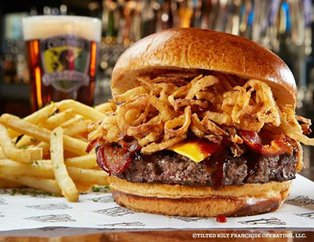

MyFavoriteFood
My Favorite Food!
Barbeque Bacon Burger

If you love smokey flavors and crispy bacon this recipe is for you! The juicy beef patty excites your taste buds, and the tangy barbeque makes you feel as if you were at a real backyard grill.
Ingredients
- Sesame seed bun
- Lettuce
- Cheese
- Tomato
- Onion strings
- Zesty barbeque sauce
- Burger patty
- Curvy crispy bacon
directions
- Open sesame seeded bun
- Slather mayo on each slice
- Gently lower cooked beef patty on bottom bun
- Stretch cheese across patty
- Center tomato on top of cheese
- Cascade bacon on cheese
- Give tomato hair of lettuce
- Sprinkle onion strings on top of the pile
- Swirl with zesty barbeque
- Close your creation and enjoy!
For more information or help, check out TasteOfHome:BBQBaconBurger